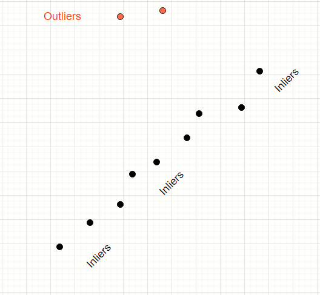
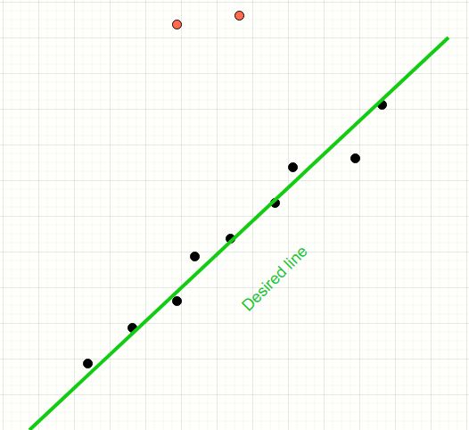
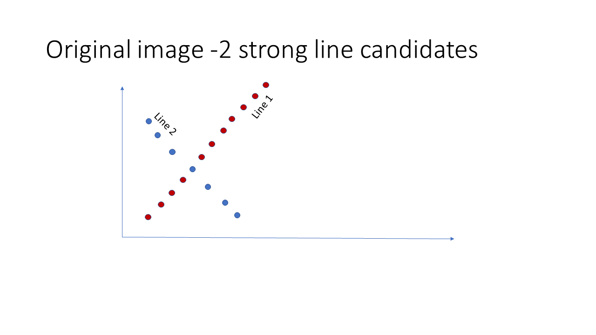
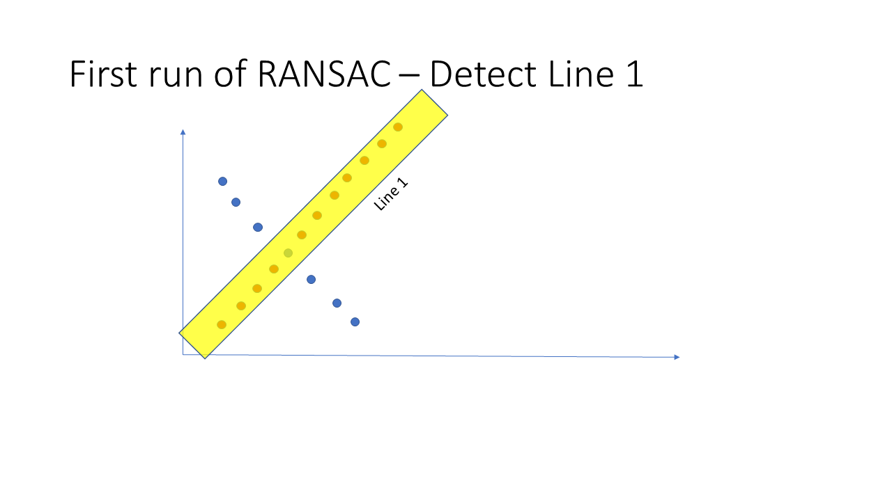
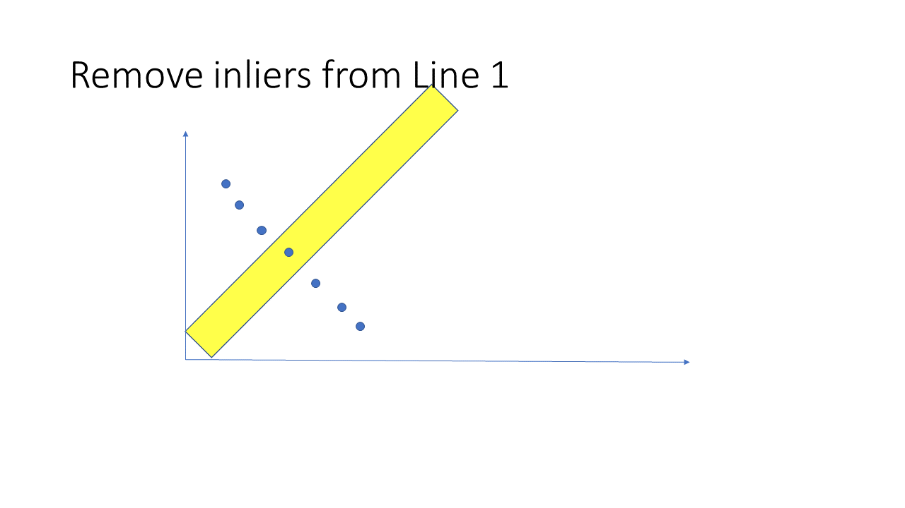
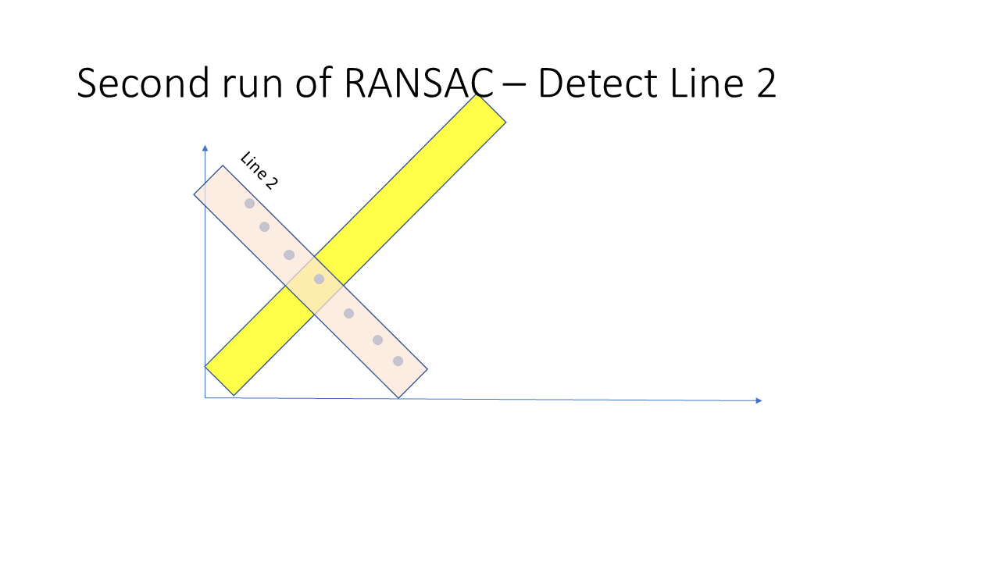
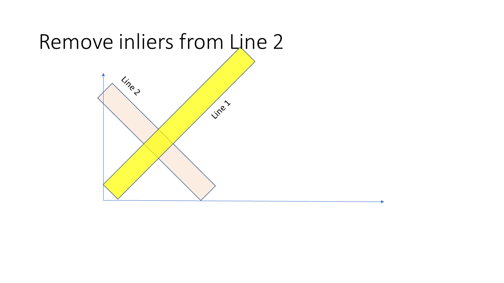
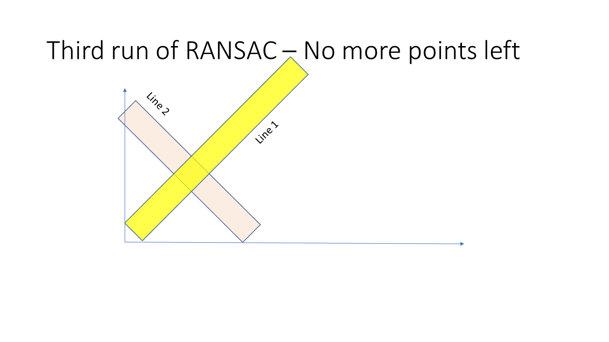

Overview
In this article we will explore how we can harness the power of the RANSAC algorithm to detect multiple lines in an image. RANAC is a robust line detection algorithm which iteratively creates line models using a subset of points. Ever model is evaluated for the total count of inlier points. An inlier is defined as a point which is within a specified threshold distance from the line. evaluates the how good the model fits. The text book implementation of the RANSAC algorithm produces a single line (if one exists). This is the line with the maximum outliers. In this article we explore how to improvise the traditional RANSAC algorithm by running it repetitively on the same image to find multiple straight lines.
Example - Noise free
A noise free image on the left and the lines detected using the recursive RANSAC approach on the right

Example - With salt pepper noise
Same image with some salt-pepper noise on the left and the lines detected using the recursive RANSAC approach on the right

An overview of RANSAC
This is not a detailed explanation of the RANSAC algorithm.
Consider the data points below
We have a mix of inliers (black) and outliers (red). We want to find the model of the straight line which fits the inliers
How does RANSAC algorithm help?
RANSAC is a simple voting based algorithm that iteratively samples the population of points and find the subset of those lines which appear to conform a model. In this case, the model is a straight line.
Running RANSAC recursively





Accompanying code
I have wrapped Scikit Learn's RANSAC implementation. As a stopping criteria, I am using halting the search for further lines when no more inliers are left OR when RANSAC produces a line with a count of inliers below a certain threshold
- Link to python code is here (TO BE DONE)
- Sample images used for developing the code is here (TO BE DONE)
Conclusion and caveats
to be done